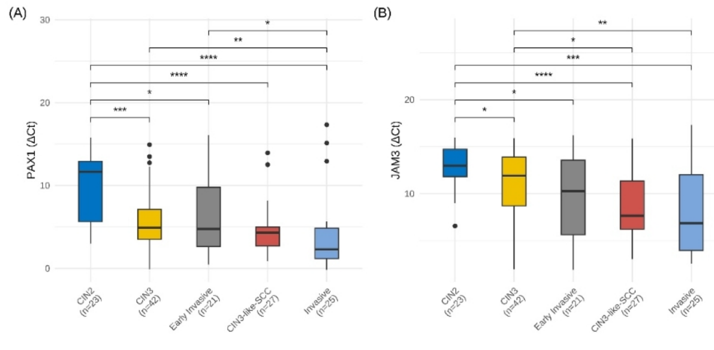
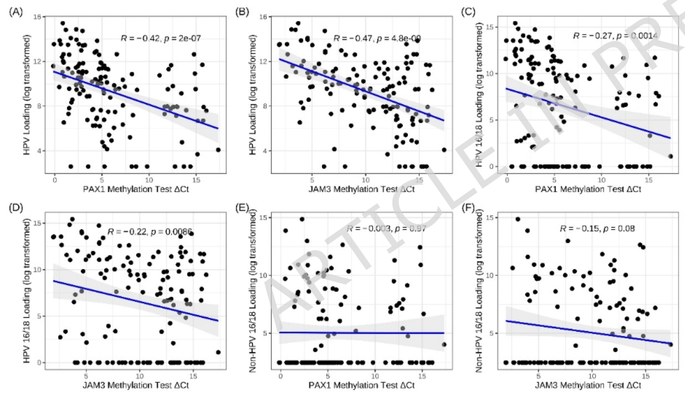
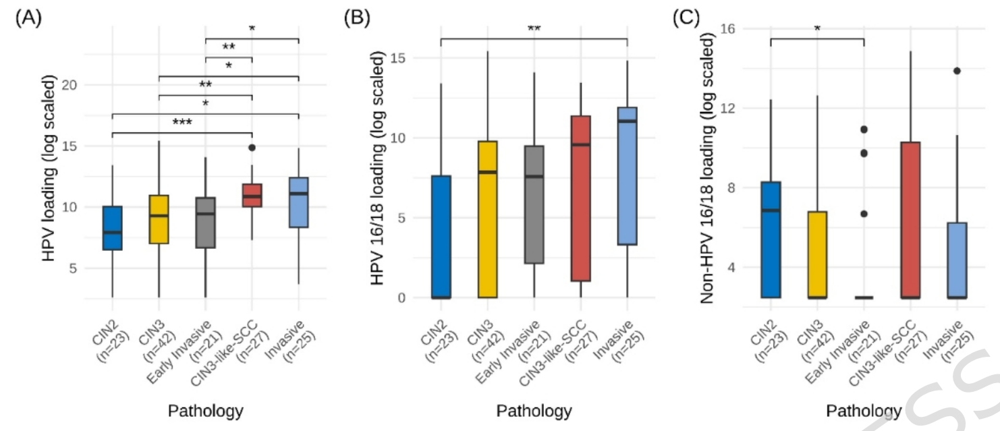

1Background & Objective
- Challenge: CIN3-like SCC mimics CIN3 (endocervical crypts) — deceptive growth, diagnostic confusion & under-staging risk.
- Objective: compare PAX1/JAM3 methylation & HPV VL across CIN3, CIN3-like SCC, early invasive & invasive SCC.
2Study Design & Cohort
138
cases
65
HSIL (23 CIN2 + 42 CIN3)
73
SCC (27/21/25)
- Setting: Peking University People's Hospital, Mar 2022 – Jun 2024; retrospective.
- Assays: PAX1/JAM3 methylation (qPCR, ΔCt) + HPV VL (type-specific).
- Groups: CIN2 · CIN3 · CIN3-like SCC · early invasive SCC · invasive SCC.
27
CIN3-like SCC
21
early invasive
25
invasive SCC
| Group | Methylation | HPV VL |
|---|---|---|
| CIN3 | low | low |
| CIN3-like SCC | high (≈SCC) | highest |
| Early invasive SCC | high | mid |
| Invasive SCC | high | high |
- Viral load: type-specific VL per 10,000 cells (BMRT platform).
- Statistics: Kruskal-Wallis / Wilcoxon; ΔCt = Ctgene − CtGAPDH.
ΔCt
methylation readout
VL
type-specific load
HE
re-reviewed
- Design: single-center retrospective; pathology re-read by two pathologists.
- Bias control: blinded molecular assays to histology.
- Endpoints: group differences in ΔCt & VL; same-FIGO comparisons.
Histology re-reviewed; HE features (Fig. 1) distinguish CIN3-like SCC (clear cell nests, central cavity, dyskeratosis).
3Methylation Results

Fig. 3 PAX1/JAM3 ΔCt by type — SCC > HSIL (P<0.001); CIN3-like SCC ≈ invasive SCC.

Fig. 4 Methylation–VL correlation (PAX1 R=−0.42; JAM3 R=−0.47).
- Cancer > HSIL: both genes significantly higher in SCC than HSIL (esp. CIN2).
- No gap in SCC: CIN3-like ≈ early invasive ≈ invasive SCC methylation.
4HPV Viral Load Results

Fig. 5 VL by type (total / 16-18 / non-16-18) — CIN3-like SCC highest.
Fig. HPV16/18 VL — CIN3-like SCC highest, near invasive SCC.
- Key difference: CIN3-like SCC VL > CIN3 & early invasive SCC (esp. HPV16/18) — a candidate molecular hint for this deceptive subtype.
- Methylation: separates cancer from HSIL, but not SCC subtypes; same-FIGO VL/methylation tend higher — larger samples needed.
Clinical Significance
- PAX1/JAM3 methylation is significantly higher in SCC than HSIL, but similar across CIN3-like / early invasive / invasive SCC — supporting its role in cancer-vs-HSIL triage rather than subtype separation.
- HPV VL (esp. 16/18) is higher in CIN3-like SCC — a candidate molecular hint for this deceptive subtype, pending larger studies.